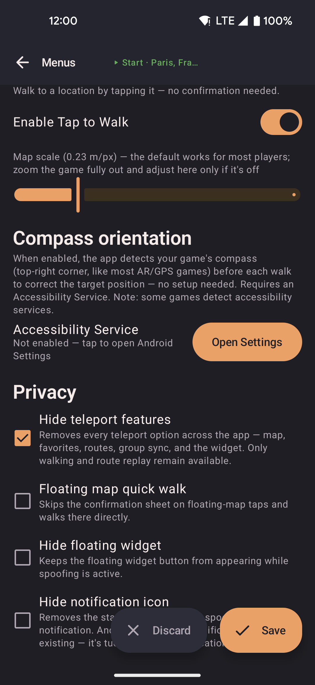

Tap to walk
Tap to walk gives you two shortcuts to move your fake location with one tap, without opening the app. Both are off by default. Turn them on in Settings → Menus → Tap to Walk.

- The Scale slider sets how many real-world meters each pixel on your screen stands for. Match it to how far the game is zoomed in.
- Compass orientation keeps taps accurate when the game map rotates. It uses an Android accessibility feature.
- The first time you turn Tap to Walk on, a warning appears. Some games can detect this kind of background helper.

- Pick your game from the Game app list, then tap Test to check that detection works on your phone.
Floating map quick walk
Turn it on in Settings → Menus → Privacy. Then a tap on the floating map walks to that spot at once. It skips the popup that asks whether to walk, teleport, or use roads.
Screen tap-to-walk overlay
This adds a crosshair button to the floating widget. Tap it once to place a clear layer over your current app. Your next tap anywhere becomes your walk destination. The layer then disappears. To cancel, tap the close button in the bottom-right corner.

- Turning the overlay on opens this screen first. It explains the detection risk and that accuracy depends on the scale setting. If your phone supports compass orientation, it also explains the accessibility permission. Nothing turns on until you tap Accept.
Scale setting
The overlay turns your tap into a real-world location using the Scale value, in meters per pixel. A higher number suits a zoomed-out game map. A lower number suits a zoomed-in map.
If taps land too far from where you meant, adjust the scale to match the game's zoom. Zooming out in the game usually gives better results.
Important note
The overlay assumes north is at the top of the map. If the game rotates the map to follow your character, taps may land in the wrong place. Compass orientation can correct this.
Some apps can detect a fake location and act on your account. Use this feature only in apps where you accept that risk.
Compass orientation
When the overlay opens, the app takes a picture of the screen and looks for your game's compass icon in the top-right corner. It uses the compass direction to rotate the walk target, so it lands correctly on a turned map. There is no separate switch. It runs once you turn on the accessibility feature below.
Setup
Compass orientation uses Android's Accessibility permission. Before Android's Accessibility settings open, a full-screen message explains what the app looks at and why. The picture of your screen never leaves your phone. Tap Accept to continue, or Decline to keep it off.
You see this message during first-run setup (the optional Compass orientation step), when you first turn Tap to Walk on, and the first time you tap the crosshair button.
- Tap Accept on the message.
- Find locationjoystick compass in the list and turn it on.
- Return to locationjoystick. Compass detection is now on.
To see the message again, go to Settings → Menus → Tap to Walk → Compass orientation and tap Open Settings.
Check that it works
- Pick your game from the Game app list.
- Tap Test. The app switches to your game, reads its compass, and returns.
- The app shows the detected direction. If it finds nothing, make sure the compass is visible in the game.
If you do not pick a game, leave the list on Select app…. Switch to your game, switch back to locationjoystick, and tap Test. The app briefly minimizes to read what is on screen.
Important note
Some apps can notice this background helper. If your game limits features when it finds one, turn off the locationjoystick compass entry in your phone's accessibility settings. The app has no separate switch for this.